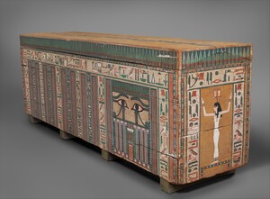

ⲥⲗⲏ B nn f, coffin: Ge 50 26 (S ⲧⲁⲓⲃⲉ), Job 21 32, Lu 7 14 (S ϭⲗⲟϭ) σορός; K 135 نعش, ⲑⲉⲃⲓ نقيرة, ib 254 do, ⲕⲁⲓⲥⲓ كفن; C 86 225 ⲟⲩⲥ. ⲛⲱⲛⲓ wherein corpses, FR 112 sim.

ⲥⲗⲏ B nn f, coffin: Ge 50 26 (S ⲧⲁⲓⲃⲉ), Job 21 32, Lu 7 14 (S ϭⲗⲟϭ) σορός; K 135 نعش, ⲑⲉⲃⲓ نقيرة, ib 254 do, ⲕⲁⲓⲥⲓ كفن; C 86 225 ⲟⲩⲥ. ⲛⲱⲛⲓ wherein corpses, FR 112 sim.
| view | ⲧⲁⲓⲃⲉ, ⲧⲏⲏⲃⲉ, ⲧⲏⲃⲉ SSaSf ⲧⲉⲃⲓ S ⲧⲉⲉⲃⲉ A ⲧⲁⲓⲃⲓ, ⲧⲱⲃⲓ, ⲑⲏⲃⲓ, ⲑⲉⲃⲓ B ⲧⲉⲃⲉ F | (noun feminine) (m once B)
chest, coffin, pouch ― for clothes [κιβωτιον] ― for grain [αποδοχειον] ― coffin [σορος] ― pouch1565 |